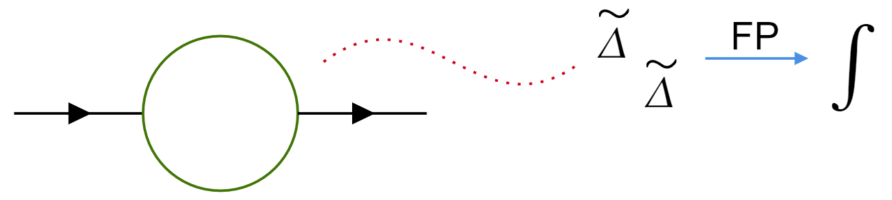

July 17th, 2024.
In the last few weeks, I have used the so-called "Feynman Formula" for integrals, for which I much rather prefer the name "Feynman parametrization". This should not be confused with Feynman's trick "differentiation under the integral sign."
This technique is extremely useful when dealing with loop integrals in Quantum Field Theory. It is usually the case that the technique is presented but not proven, even though there seems to be a lot of magic going on under the hood. After all, it certainly breaks down an integral into a product of denominators!
This is what we are trying to show today:
\[\frac{1}{A_1 ^{\alpha _1 }\cdots A_n ^{\alpha _n }}=\frac{\Gamma \left( \sum_{i}^{} \alpha _i \right) }{\prod _i \Gamma (\alpha _i )}\frac{1}{(n-1)!}\int dF_n \;\frac{\prod _i x_i ^{\alpha _i -1}}{ \left( \sum_{i}^{} x_i A_i \right) ^{\sum_{i}^{} \alpha _i }} \]Where
\[\int dF_n =(n-1)!\int_{0}^{1} dx_1 \cdots dx_n \; \delta (x_1 +\cdots +x_n -1) \]The above formula is a generalization of a simpler form of it (where we assume that all the alphas $\alpha $ are 1):
\[\frac{1}{A_1 \cdots A_n }=\int dF_n \;(x_1 A_1 +\cdots +x_n A_n )^{-1} \]Where we could argue that both serve the same purpose: Instead of having denominators to some power, you can take many denominators to the first power. This will, of course, add more $x_i $ variables to deal with later on.
The Gamma function is defined by the following integral
\[\Gamma (z)=\int_{0}^{\infty } t^{z-1}e^{-t}dt \]Which is related to the familiar notion of factorial for positive integers:
\[\Gamma (n)=(n-1)! \]More useful to us will be:
\[\frac{\Gamma (\alpha )}{A^{\alpha }}=\int_{0}^{\infty } dt\;t^{\alpha -1}e^{-At} \tag{i} \]Which follows from a change of variables:
\begin{align*} \int_{0}^{\infty }dt\; t^{\alpha -1}e^{-At} &= \int_{0}^{\infty } \frac{du}{A}\; \left( \frac{u}{A} \right) ^{\alpha -1}e^{-u}\tag{Use $u=At $} \\ &= \int_{0}^{\infty } du\;u^{\alpha-1}\frac{1}{A^{\alpha-1}}\frac{1}{A}e^{-u} \\ &= \frac{1}{A^{\alpha }} \int_{0}^{\infty } du\;u^{\alpha -1}e^{-u} \\ &= \frac{1}{A^{\alpha }}\Gamma (\alpha ) \end{align*}Before employing Eq. (i), there is another thing we will make us of and needs some introduction/justification. Consider
\[1=\int_{0}^{\infty } ds\;\delta \left( s-\sum_{i}^{} t_i \right) \tag{ii}\]An equation that follows directly from the definition of the Dirac delta $\delta (x) $:
\[\int_{-\infty }^{\infty } \delta (x-a)dx=1 \]We have the tools needed to prove Feynman's parametrization.
Consider taking an indexed finite product of Eq. (i). That is, index the $\alpha $ and $A $ values by some index $i $. For a product of two of them:
\[\frac{\Gamma (\alpha _1 )\Gamma (\alpha _2 )}{A_1 ^{\alpha _1 }A_2 ^{\alpha _2 }}=\int_{0}^{\infty } dt_1 dt_2 \;t_1 ^{\alpha _1 -1}t_2 ^{\alpha _2 -1}\exp \left( -A_1 t_1 -A_2 t_2 \right) \]And in general:
\[\frac{\prod _i \Gamma (\alpha _i )}{\prod _i A_i ^{\alpha _i }}=\int_{0}^{\infty } dt_1 \cdots dt_n \;\prod _{i}t_i ^{\alpha _i -1}\exp \left( -\sum_{i}^{} A_i t_i \right) \]We now multiply by 1 on both sides. That is, let's make us of Eq. (ii), placing the right hand side on the right hand side:
\[\frac{\prod _i \Gamma (\alpha _i )}{\prod _i A_i ^{\alpha _i }}=\int_{0}^{\infty } dt_1 \cdots dt_n ds\;\prod _{i}t_i ^{\alpha _i -1}\exp \left( -\sum_{i}^{} A_i t_i \right)\delta \left( s-\sum_{i}^{} t_i \right) \]Let's change each $t_i $ variable by $sx_i $, so that $dt_i =sdx_i $:
\[\frac{\prod _i \Gamma (\alpha _i )}{\prod _i A_i ^{\alpha _i }}=\int_{0}^{\infty } dx_1 \cdots dx_n ds \;s^n \prod _{i}(sx_i) ^{\alpha _i -1}\exp \left( -\sum_{i}^{} A_i sx_i \right)\delta \left( s-\sum_{i}^{} sx_i \right) \]It is important to note that we picked up a factor of $s^n $ (one for each of the $n $ $u $-subs). Let's now rewrite the right hand side by first making some important remarks:
The Delta Dirac satisfies $\delta (ax)=\frac{1}{|a|}\delta (x) $, so
\begin{align*} \delta \left( s-\sum_{i}^{} sx_i \right) &= \delta \left( s \left[ 1-\sum_{i}^{} x_i \right] \right) \\ &= \frac{1}{s}\delta \left( 1-\sum_{i}^{} x_i \right) \end{align*}Where I ignored the absolute values at the end since $s $ will always be non-negative.
Similarly, it is important to remark that
\[\prod _i a_i b_i = \left( \prod _i a_i \right) \left( \prod _i b_i \right) \]So
\begin{align*} \prod _{i}(sx_i) ^{\alpha _i -1} &= \left( \prod _i x_i ^{\alpha _i -1} \right) \left( \prod _i s^{\alpha _i -1} \right) \\ &= \left( \prod _i x_i ^{\alpha _i -1} \right) \left( \prod _i s^{\alpha _i } \right) (s^{-1} )^n \\ &= \left( \prod _i x_i ^{\alpha _i -1} \right) \left( \prod _i s^{\alpha _i } \right)\frac{1}{s^n } \\ &= \left( \prod _i x_i ^{\alpha _i -1} \right) s^{\sum_{i}^{} \alpha _i }\frac{1}{s^n } \end{align*}The right-most factor of $1/s^n $ will cancel with the factor of $s^n $ we picked up from the $n $ $u $-substitutions. We see then that
\[\frac{\prod _i \Gamma (\alpha _i )}{\prod _i A_i ^{\alpha _i }}=\int_{0}^{\infty } dx_1 \cdots dx_n ds \; \left( \prod _{i}x_i ^{\alpha _i -1} \right) s^{\sum_{i}^{} \alpha _i -1}\exp \left( -s\sum_{i}^{} A_i x_i \right)\delta \left( 1-\sum_{i}^{} x_i \right) \]The $s $ integral is an integral of the form of Eq. (i), with $\alpha = \sum_{i}^{} \alpha _i $ and $A =\sum_{i}^{} A_i x_i $. The above then simplifies to (carry out the $s $ integral):
\[\frac{\prod _i \Gamma (\alpha _i )}{\prod _i A_i ^{\alpha _i }}=\int_{0}^{\infty } dx_1 \cdots dx_n \; \left( \prod _{i}x_i ^{\alpha _i -1} \right) \delta \left( 1-\sum_{i}^{} x_i \right) \frac{\Gamma (\sum_{i}^{} \alpha _i )}{ \left( \sum_{i}^{} A_i x_i \right) ^{\sum_{i}^{} \alpha _i }} \]Cleaning this up a bit, and taking $\Gamma (\sum_{i }^{} \alpha _i ) $ outside of the integral gives:
\[\frac{\prod _i \Gamma (\alpha _i )}{\prod _i A_i ^{\alpha _i }}= \Gamma (\sum_{i}^{} \alpha _i ) \int_{0}^{\infty } dx_1 \cdots dx_n \; \delta (1-x_1 -x_2 -\cdots -x_n )\frac{\prod _i x_i ^{\alpha _i -1} }{\left( \sum_{i}^{} A_i x_i \right) ^{\sum_{i}^{} \alpha _i }} \]Since the ($n $) $x_i $s can't be greater than 1 (because of the $\delta $ function), it is safe to rewrite the above as integrals from $0 $ to $1 $ rather than to $\infty $:
\[\frac{\prod _i \Gamma (\alpha _i )}{\prod _i A_i ^{\alpha _i }}= \Gamma (\sum_{i}^{} \alpha _i ) \int_{0}^{1 } dx_1 \cdots dx_n \; \delta (1-x_1 -x_2 -\cdots -x_n )\frac{\prod _i x_i ^{\alpha _i -1} }{\left( \sum_{i}^{} A_i x_i \right) ^{\sum_{i}^{} \alpha _i }} \]The combination of $dx_i $s integrals from $0 $ to $1 $ and the Dirac delta gives precisely (times a factor of $(n-1)! $) the definition of $\int dF_n $, so:
\[\frac{\prod _i \Gamma (\alpha _i )}{\prod _i A_i ^{\alpha _i }}= \frac{\Gamma (\sum_{i}^{} \alpha _i )}{(n-1)!} \int dF_n \;\frac{\prod _i x_i ^{\alpha _i -1} }{\left( \sum_{i}^{} A_i x_i \right) ^{\sum_{i}^{} \alpha _i }} \]So
\[\frac{1}{A_1 ^{\alpha _1 }\cdots A_n ^{\alpha _n }}=\frac{\Gamma \left( \sum_{i}^{} \alpha _i \right) }{\prod _i \Gamma (\alpha _i )}\frac{1}{(n-1)!}\int dF_n \;\frac{\prod _i x_i ^{\alpha _i -1}}{ \left( \sum_{i}^{} x_i A_i \right) ^{\sum_{i}^{} \alpha _i }} \]Of course, Equation (i) is true. This formula should not be thought of as a formula to solve integrals, but as a tool to make an expression take a more useful form. That is, it is not that we always want to go from the right hand side (an integral) to the left hand side (a denominator), but rather turn denominators into integrals.
A simple problem where this is used is in computing 1-loop corrections to the propagator of a $\phi ^3 $ theory. For more on this, see Srednicki chapter 14.
